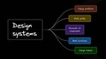

Builder.io Blog
https://www.builder.io/blog
Builder Blog for the latest insights, tips, and best practices for learning how to build fast digital experiences across all channels, faster.
フィード

Design Systems Explained
Builder.io Blog
Design systems: core components and building process. Learn about pattern libraries, visual elements, and tools for effective implementation.
18時間前
Visual editing is bridging the gap between developers and designers
Builder.io Blog
Visual editing is transforming web development and uniting developers and designers. See how it integrates with AI to create more efficient web experiences.
7日前

A helpful approach to navigating the SEO AI shift
Builder.io Blog
Explore AI's impact on SEO strategies and content creation. Find out how to balance AI tools with human expertise for better search rankings.
16日前
High-Performance Personalization For Modern Frontends
Builder.io Blog
Personalization doesn't have to slow your site down. We'll dive into techniques that balance speed, flexibility, and cost.
23日前
Locale grouping: Scale localization initiatives more efficiently
Builder.io Blog
New locale grouping feature. Covers benefits and examples of the feature to help users manage and maintain locales more efficiently.
23日前
Cursor vs GitHub Copilot
Builder.io Blog
Compare Cursor & GitHub Copilot's features for code completion, generation, and project-wide understanding. Find out which AI assistant best fits your workflow.
24日前
Figma Plugins for Developers in 2024
Builder.io Blog
These Figma plugins bridge design and development. Learn how they can help with tasks like prototyping, asset management, and more.
1ヶ月前
The Rise, Fall, and Rebirth of Visual Editing
Builder.io Blog
Learn how visual editors have evolved from basic CMS tools to the advanced AI-powered platforms they'll be in the future.
1ヶ月前
Key Considerations for Next.js App Router Files
Builder.io Blog
Dive into the 9 special routing files in Next.js App Router. We break down each file's purpose and spotlight crucial tips to boost performance and structure.
1ヶ月前
Build Web Apps Absurdly Fast with Vite
Builder.io Blog
Speed up web development with Vite. Instant server start, hot module replacement, and easy setup. Learn to build faster, smoother web apps today.
1ヶ月前
I Built A Website That Is AI-Generated As You Browse It
Builder.io Blog
I built a website that writes itself using AI. Is this the future of web browsing or the doom of the internet?
1ヶ月前
Extensibility: Building software that adapts
Builder.io Blog
Extensibility in software: from plugins to microservices. Create flexible, scalable apps that adapt to change. Build systems that grow with your business needs.
1ヶ月前
The Ultimate Introduction to Cursor for Developers
Builder.io Blog
Discover Cursor, an AI-powered code editor that revolutionizes development. Learn about its key features and how it enhances coding efficiency and productivity.
1ヶ月前
The Ultimate Guide to Headless CMS
Builder.io Blog
An overview of headless CMS: what it is, how it differs from traditional CMS, its use cases, and how to choose the right solution for your needs.
2ヶ月前
The Unintended Consequences of Open Sourcing Software
Builder.io Blog
Open source is great, but what about companies that profit from it without giving back? Let's look at the ethics, impacts, and tensions in this practice.
2ヶ月前
Digital asset management: Organize your digital world
Builder.io Blog
Digital Asset Management streamlines file chaos, boosts collaboration, and saves time. See how DAM organizes content and enhances project productivity.
2ヶ月前
What is a Composable DXP?
Builder.io Blog
Ditch the monolith. Composable DXPs offer flexibility, speed and AI-powered innovation. Learn how they're reshaping digital experiences and why you should care.
2ヶ月前
Composable DXP: the Future of DXPs
Builder.io Blog
Composable DXPs offer a flexible, future-proof alternative to traditional monolithic platforms. However, this modular approach comes with trade-offs.
2ヶ月前
Figma to SwiftUI
Builder.io Blog
Convert your Figma design to SwiftUI code using Visual Copilot. Save hours of manual work, streamline your iOS development workflow.
2ヶ月前
Good Refactoring vs Bad Refactoring
Builder.io Blog
Refactoring can make your code way better - or way worse. Here's how to avoid messing up your codebase when you refactor code.
2ヶ月前
Moving beyond headless CMS is the only path forward
Builder.io Blog
Why headless CMSs fall short and how visual development is the best path forward. It's all about increased business velocity and reduced engineering costs.
2ヶ月前
How to Make AI Suck Less When Building AI Features
Builder.io Blog
Practical tips for making AI less prone to errors in products. Covers techniques like constraining AI responses, clear instructions, and hybrid approaches
3ヶ月前
The Upcoming “Macintosh Moment” of Programming
Builder.io Blog
Visual development and AI are set to make coding as intuitive as using a smartphone. Learn how this shift will democratize programming and boost innovation.
3ヶ月前
AI Code Generation with Visual Copilot
Builder.io Blog
Review current AI code generators, like Claude and Chat GPT and discover how Visual Copilot converts Figma designs to clean code
3ヶ月前
Where AI Dev Tools Miss the Mark
Builder.io Blog
AI coding tools promise to revolutionize development, but often fall short. Let's look at where they miss the mark and how to best leverage AI for coding.
3ヶ月前
An SEO aha moment: understanding Core Web Vitals
Builder.io Blog
Core Web Vitals measure your site's speed and user experience. Focusing on loading, interactivity, and visual stability improves search engine rankings.
3ヶ月前
The AI-Driven Evolution of CMSs: From Text Boxes to Generative UI
Builder.io Blog
Discover how AI and generative UI are transforming CMSs. Shift from traditional CMS to AI-driven platforms that empower teams and streamline workflows.
3ヶ月前
The Truth About AI's Impact on Software Development Jobs
Builder.io Blog
As AI rapidly advances, software engineers face uncertainty about their future. Let's examine the impact of AI on programming careers and job security.
3ヶ月前
Structured Data: What It Is and Why You Need It
Builder.io Blog
Get a clear understanding of structured data and its applications. Explore how to implement it, its effects on SEO, and when it's most useful for your content.
3ヶ月前
Why Headless CMSs Are A Huge Step Backwards For Content Management
Builder.io Blog
Headless CMSs have narrowed the definition of content and increased developer dependence, but there is a solution for more flexible, visual content management.
3ヶ月前